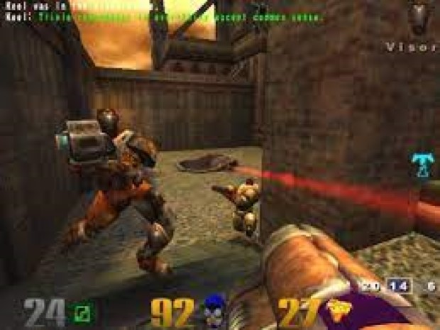

O Counter Strike tem início em 1996, como um mod do jogo Half-Life, criado por Minh Le, um desenvolvedor de jogos vietnamita naturalizado canadense. Quando Minh Le conheceu um jogo chamado Quake, que era um grande sucesso deste gênero. Um tempo depois, ele conhçeu o SDK (Software Development Kit), e utilizou esta ferramenta para desenvolver coisas relacionadas ao Quake.
